롬 1:1 예수 그리스도의 종, 바울
01 / 12
롬 1:1 예수 그리스도의 종, 바울
01 — 12
OPENING
롬 1:1 예수 그리스도의 종, 바울
예수 그리스도의 종, 바울
복음은 사람의 이력과 자기소개를 다시 쓴다.
롬 1:1 • 복음은 나를 어떤 이름으로 부르는가?
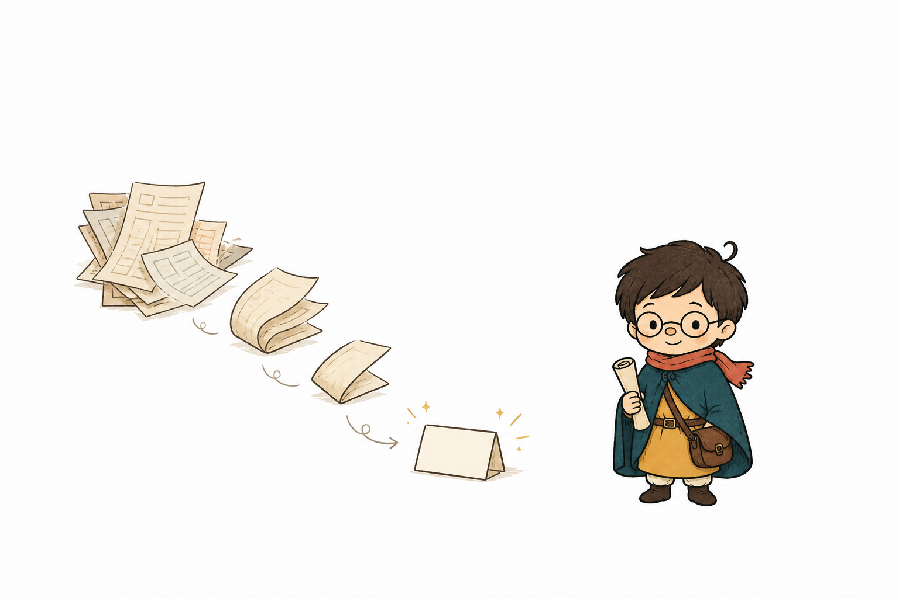
원문 • 원문 행 1, 3, 6 • 로마서 1:1
01
롬 1:1 예수 그리스도의 종, 바울
02 — 12
CONTEXT
로마서는 전환을 일으켜 왔다
원문은 로마서를 개인과 역사의 방향을 바꾸어 온 복음의 저수지로 제시한다.
원문 사례와 역사적 영향은 별도 검수
아우구스티누스→루터→칼 바르트
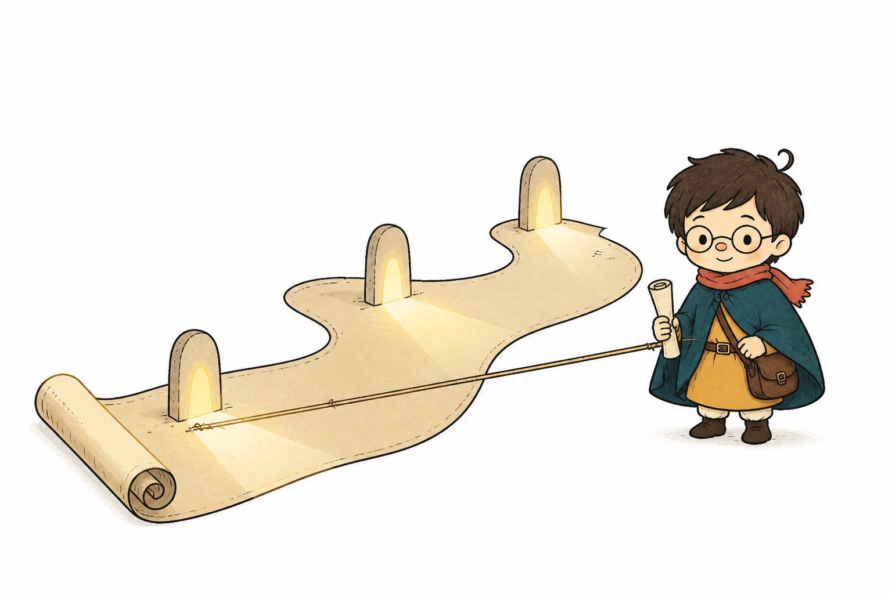
원문 사례•검토 필요 • 원문 행 3, 26 • 로마서 13:13–14 • 로마서 1:17
02
롬 1:1 예수 그리스도의 종, 바울
03 — 12
TURN
완전히 준비되지 않아도 시작하는 이유
변화에 대한 열망이 해석의 두려움보다 앞서기에 공동체와 함께 로마서를 시작한다.
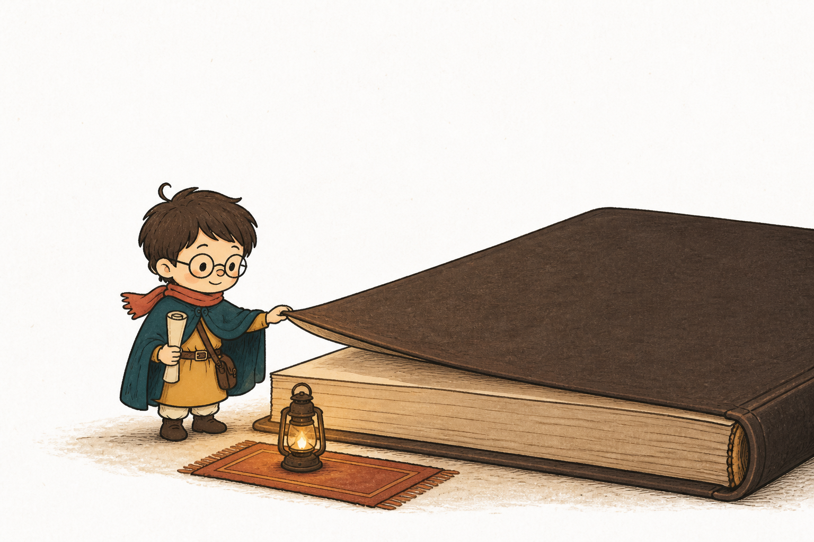
변화를 바라는 마음 • 왜곡을 두려워하는 마음
원문 • 원문 행 28, 35
03
롬 1:1 예수 그리스도의 종, 바울
04 — 12
CLAIM
바울의 명함에는 두 단어가 있다
로마서 1:1은 바울의 정체성을 종과 사도라는 두 관계어로 연다.
종 + 사도
종→사도
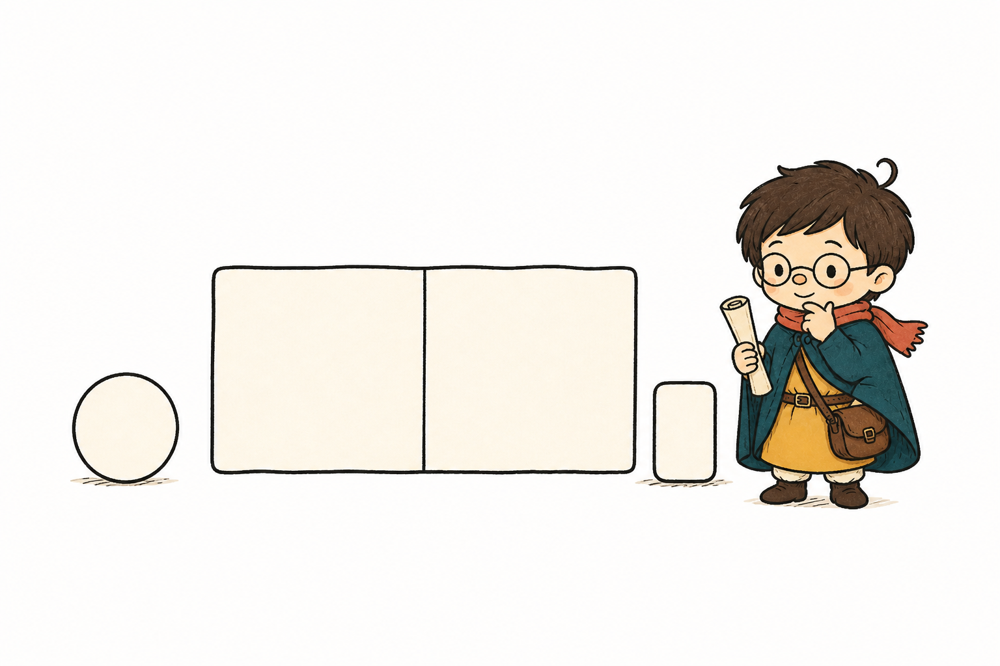
로마서 1:1 • 원문 행 37, 42 • 로마서 1:1
04
롬 1:1 예수 그리스도의 종, 바울
05 — 12
CLAIM
종은 주님과 한 운명 공동체다
원문에서 종 됨은 주님의 길을 함께 걷고 은혜에 붙잡힌 자발적 결단이다.
주님의 시선 • 주님의 길 • 주님과 함께
주님이 보는 것→주님이 걷는 길→주님과 함께
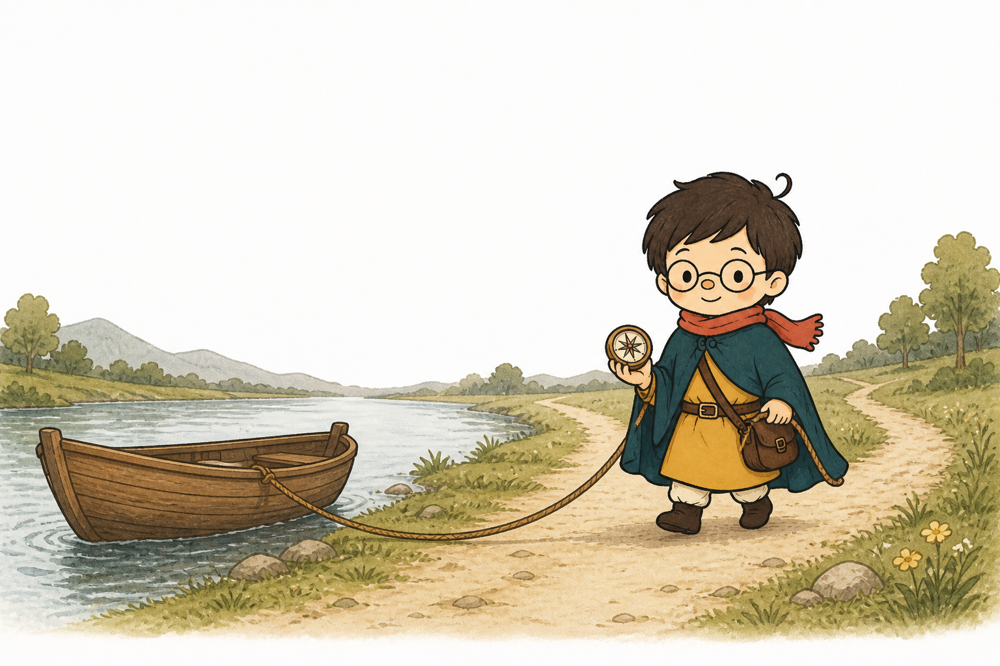
로마서 1:1 • 어휘•역사 검토 필요 • 원문 행 44, 62 • 로마서 1:1
05
롬 1:1 예수 그리스도의 종, 바울
06 — 12
CLAIM
사도는 보냄 받은 심부름꾼이다
사도는 자기 생각을 앞세우는 사람이 아니라 보내신 분의 뜻을 전달하는 사람이다.
보내는 사람 ≠ 보냄 받은 사람
보내는 사람 ≠ 보냄 받은 사람→메시지 > 메신저
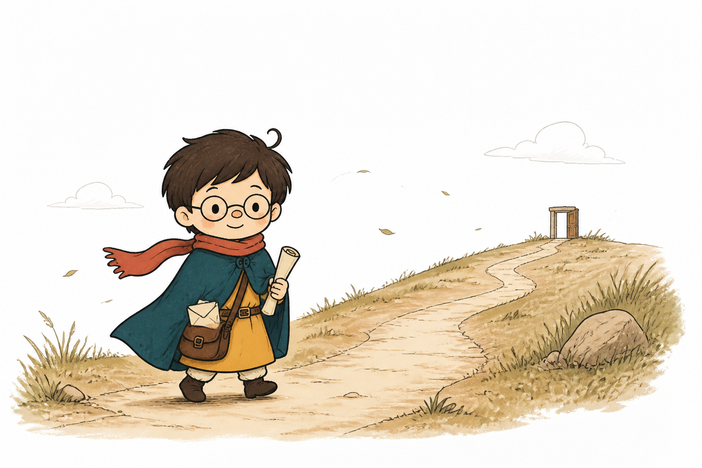
로마서 1:1 • 해석 • 원문 행 64, 69 • 로마서 1:1
06
롬 1:1 예수 그리스도의 종, 바울
07 — 12
CONTEXT
바울의 옛 명함
혈통•율법•신분•열심이 바울의 옛 명함을 복잡하게 만들었다.
옛 명함의 여러 증명 항목
할례→베냐민→히브리인→바리새인→열심
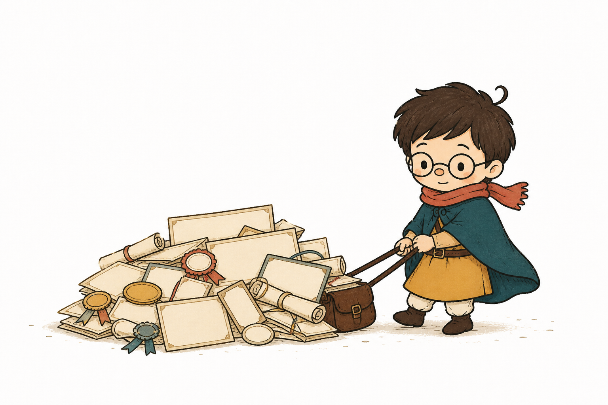
원문 • 원문 행 71, 84 • 빌립보서 3:5–6
07
롬 1:1 예수 그리스도의 종, 바울
08 — 12
CLAIM
복음은 이력서의 기준을 바꾼다
바울은 율법에서 난 의를 손해로 여기고 하나님께로부터 난 의를 새 기준으로 받는다.
율법에서 난 의 ↔ 하나님께로부터 난 의
율법에서 난 의→하나님께로부터 난 의
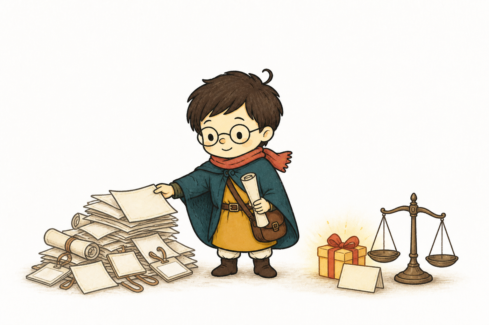
빌립보서 3:7–9 • 해석 • 원문 행 86, 108 • 빌립보서 3:7–9
08
롬 1:1 예수 그리스도의 종, 바울
09 — 12
EVIDENCE
깨끗함의 문제는 안과 밖이다
복음은 바깥의 오염을 관리하는 방법이 아니라 안에서 나오는 것을 새롭게 하는 일이다.
겉을 닦는 방식과 안에서 시작되는 변화
밖에서 안으로?→안에서 밖으로!
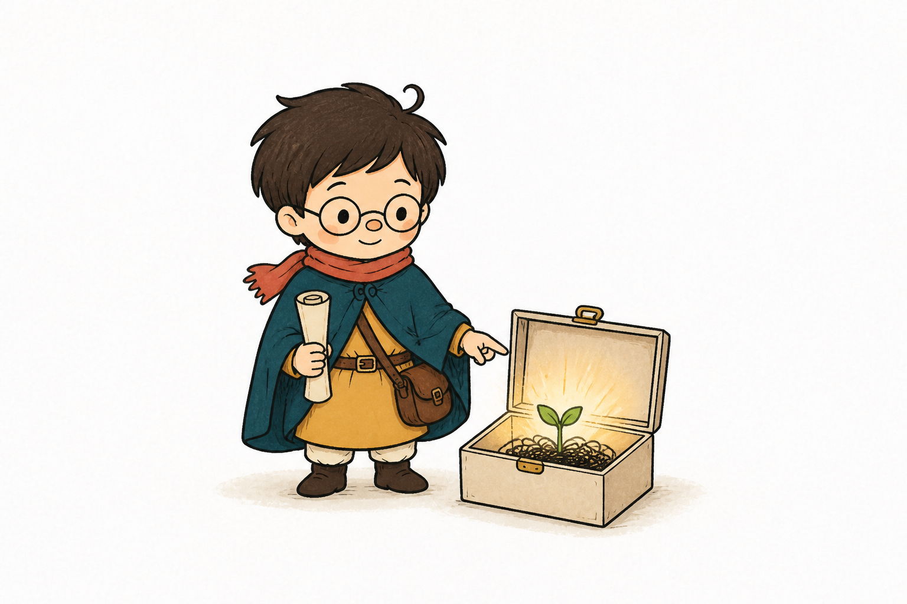
마가복음 7:15–23 • 해석 • 원문 행 110, 131 • 마가복음 7:15–23
09
롬 1:1 예수 그리스도의 종, 바울
10 — 12
EVIDENCE
마음은 스스로 새로워지지 않는다
수로보니게 여인의 이야기는 자격과 인간적 수단을 넘어 예수께 나아가는 믿음의 은총을 보여준다.
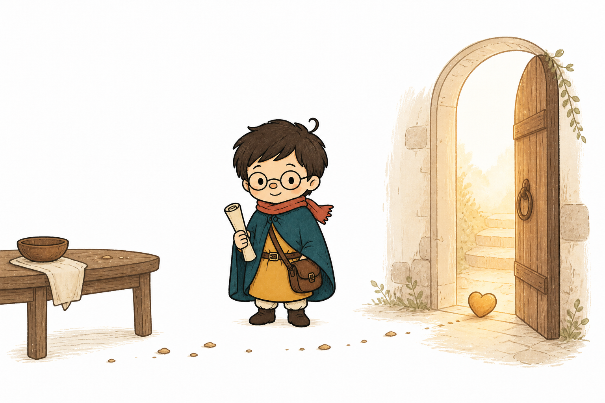
경계 밖의 식탁 • 부스러기 • 열린 문
마가복음 7:24–30 • 해석 • 원문 행 133, 158 • 마가복음 7:24–30
10
롬 1:1 예수 그리스도의 종, 바울
11 — 12
LIFE
복음에 사로잡힌 사람의 새 명함
바울의 화려한 이력은 예수 그리스도의 종이며 사도라는 한 줄로 정리된다.
예수 그리스도의 종이며 사도인 바울
예수 그리스도의 종이며 사도인 바울
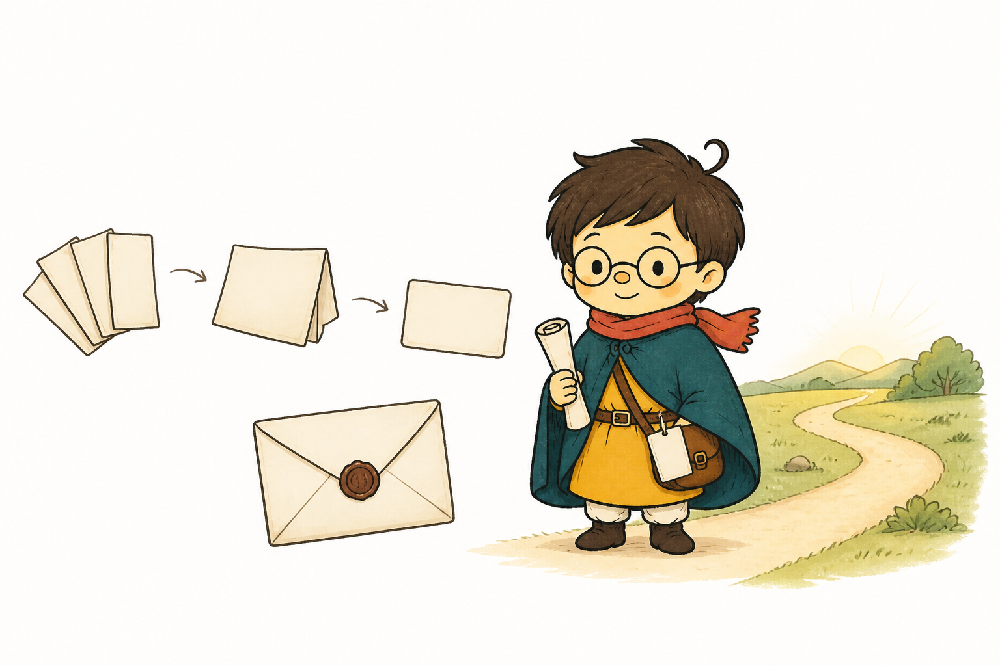
원문 적용 • 원문 행 160, 171 • 사도행전 22:3 • 로마서 1:1
11
롬 1:1 예수 그리스도의 종, 바울
12 — 12
CONCLUSION
“
하나님이 보시는 이름으로 살아가기
성도의 가치는 세상의 이력이 아니라 부르시고 보내시는 주님에게서 측정된다.
나는 예수 그리스도의 종이며 사도입니다
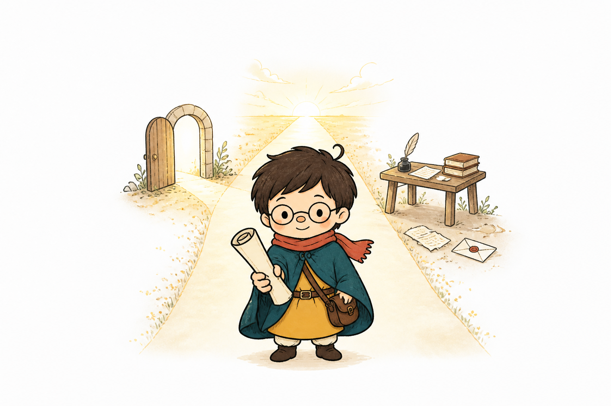
원문 적용 • 원문 행 173, 175 • 로마서 1:1
12
← → 페이지 이동 · N 스피커 노트 · P 인쇄 대화상자